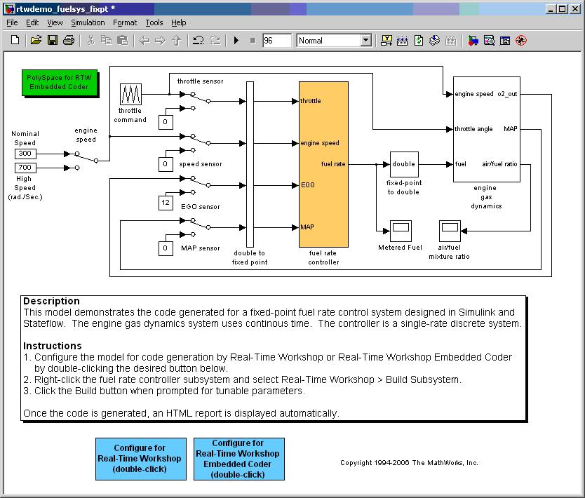
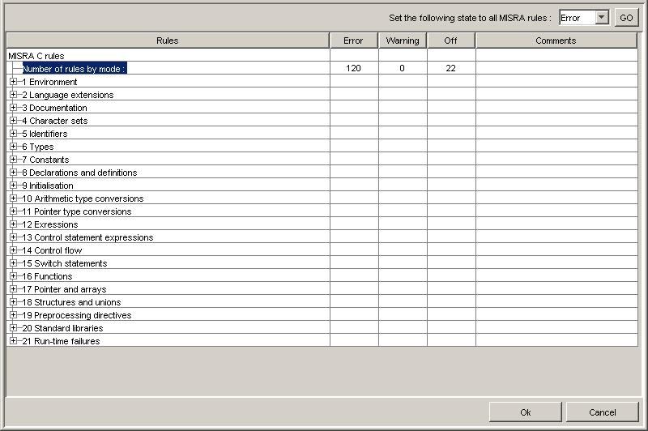
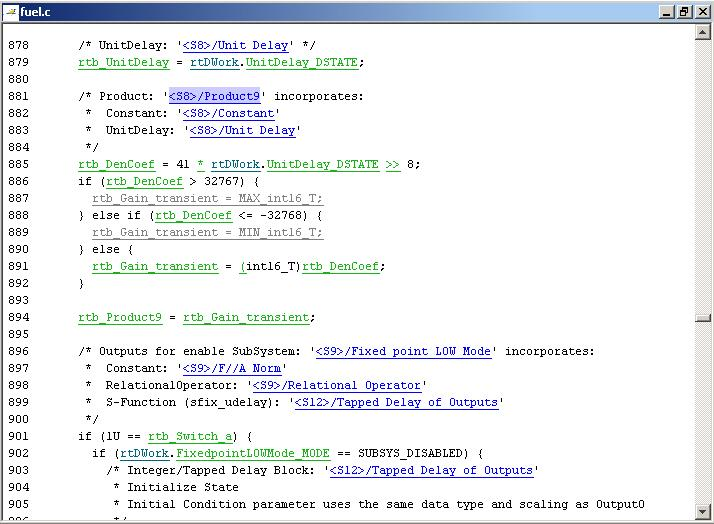
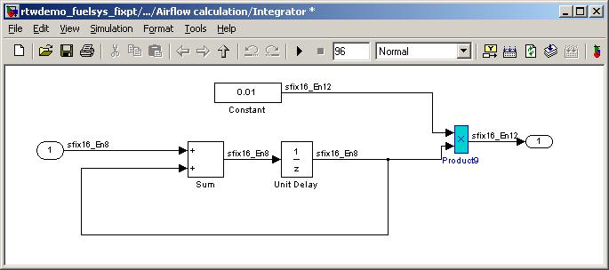
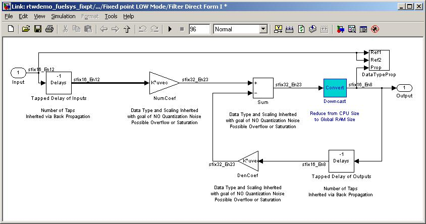
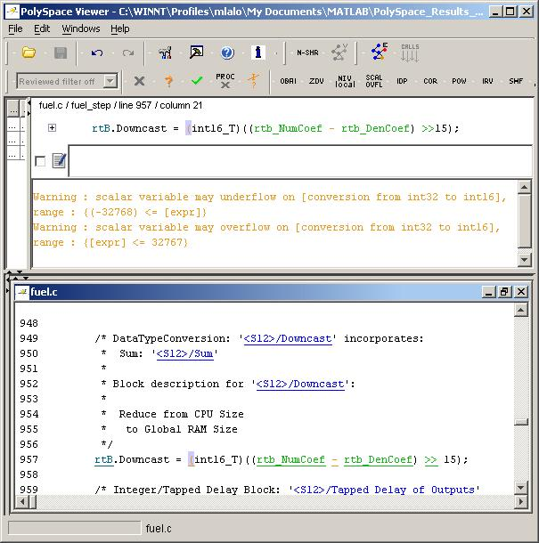
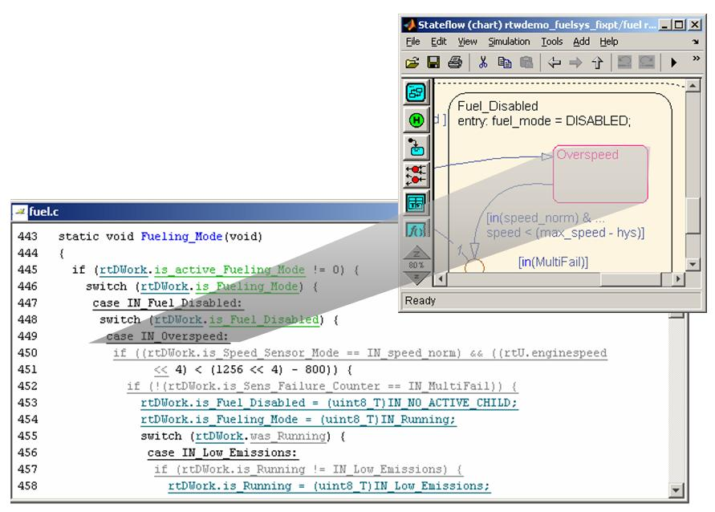

PolySpace Verification with MISRA C Checking
The embedded software design process is manual and error prone. Design flaws can appear during model update, simulation, or even later during embedded software testing with processor-in-loop (PIL) verification. One category of design flaws is difficult to detect using only model updates and simulations: run-time errors.
Elimination of run-time errors is important for all software but especially for software that must meet safety standards such as MISRA-C:2004, which prohibits run-time errors in rule 21.2. Examples of run-time errors include fixed-point or integer overflow, division by zero, memory corruption, and out-of-bounds array accesses. These errors manifest through specific combinations of the input signals and parameter values of a model, and are often hard to detect using empirical methods or testing alone.
This document provides examples of how PolySpace® products prove both the absence and presence of run-time errors for code generated by Real-Time Workshop Embedded Coder software. It also shows the results of MISRA C® compliance for the generated code.
Contents
MISRA-C:2004
This document uses a fixed-point version of the fuelsys model (Fixed-Point Fuel Control System). To activate the PolySpace products, add the PolySpace block from the Simulink® Library browser.

To get the list of MISRA C violations, click on the PolySpace button. The MISRA C checks are performed on the generated C code and on the C code invoked in S-functions.
You can enable or disable specific MISRA-C:2004 rules from a graphical interface included in the PolySpace products.

Proving the Absence or Presence of Run-Time Errors
PolySpace products perform code verification aimed at proving the absence of run-time errors in any location in the generated code. A proven code section is colored green when this diagnostic occurs. The following example shows generated code that has been fully verified as not including any run-time errors.

PolySpace products let you trace the verified code back to the Simulink model by right-clicking on the blue hyper-links displayed in the code. The highlighted portion (product operator) in the model produced the green code section.

When PolySpace products cannot prove the absence of an error, the diagnostic indicates one of three results:
- Red: A link to the error message associated to the error which occurs at every execution.
- Orange: A link to an unproven message, an error may occur sometimes.
- Grey: A link to a check shown as unreachable code.
Example of Overflowing Operation in the Model
PolySpace products can verify a piece of generated code under certain assumptions using specified input data ranges. The verification checks the reliability of the generated code based on external constraints of calibration data, parameter changes, scaling, and more. The following example shows a possible overflow in the generated code from fuelsys where some input range data has been constrained:
'throttle' in [0...120] 'enginespeed' in [0...1000] 'EGO' in [0...1536] 'MAP' in [0...256]

The following block in fuelsys has the overflowing operation. Using a saturation operator may fix the error (overflow).

Example of Unreachable Code in the Model
Besides run-time errors, PolySpace products also check for unreachable code. For example, unreachable code can show up in a Stateflow® machine or in a sub-system when activating conditions are never met. The following example shows a section of unreachable code in fuelsys.
